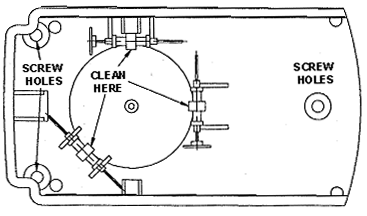
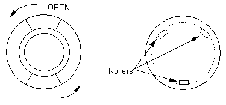

Operating Documentation
Direction 5112972-800, Rev# 2
CT Planned Maintenance Procedures
Operating Documentation |
| Required Persons | Preliminary Reqs | Procedure | Finalization |
|---|---|---|---|
| 1 | Timing Not Applicable | 5 mins | Timing Not Applicable |
Procedure Effectivity:
| Assembly: | CONSOLE |
| Subassembly: | Console Desktop |
| Purpose: | Check for Smooth Rolling Trackball and Mouse |
| Last Revised: | February 1998 |
| Item | Qty | Effectivity | Part# | Manufacturer | |
|---|---|---|---|---|---|
| Standard FE Toolkit | 1 | - | - | - | |
The Trackball and the Mouse require little maintenance. Verify that their movement is smooth. If it is not smooth proceed to clean them.
Turn the console power off.
Turn the trackball upside down and remove the three screws in the bottom of the case. See Illustration 1.
Illustration 1: Trackball

While holding the top and bottom halves of the case together, turn the trackball right side up and remove the cover.
Lift the ball out and clean it using a mild detergent.
Using rubbing alcohol on a cotton swab clean the roller surfaces that come in contact with the ball.
Put the rubber ball back into the trackball. Replace the cover and slide it back clockwise until it locks into place.
Clean quarterly.
Turn the console power off.
Turn the mouse upside down and remove the mouse track ball cover by sliding it counter clockwise. See Illustration 2.
Illustration 2: Mouse

Turn the mouse right side up and let the rubber ball fall out into your hand. Clean it using a mild detergent.
Using rubbing alcohol on a cotton swab clean the roller surfaces that come in contact with the ball.
Put the rubber ball back into the mouse. Replace the cover and slide it back clockwise until it locks into place.
Clean quarterly.
No finalization required.